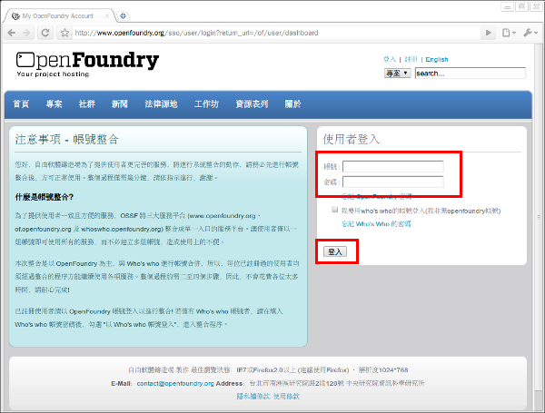
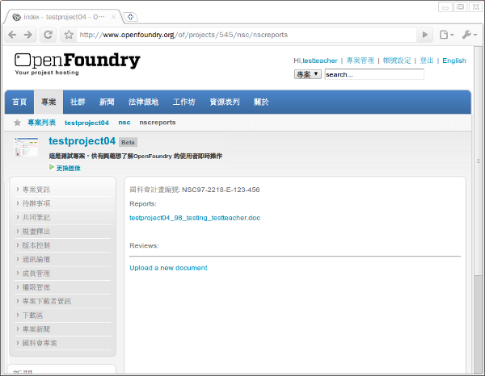

感謝您對「自由軟體鑄造場」的支持與愛護，十多年來「自由軟體鑄造場」受中央研究院支持，並在資訊科學研究所以及資訊科技創新研究中心執行，現已完成階段性的任務。 本網站預計持續維運至 2021年底，網站內容基本上不會再更動。
也紀念我們永遠的朋友 李士傑先生（Shih-Chieh Ilya Li）。
也紀念我們永遠的朋友 李士傑先生（Shih-Chieh Ilya Li）。
Help  NSC Project
NSC Project
NSC Project
Last Updated on Wednesday, 12 September 2012 16:35
-
國科會專案需按照規定時程上傳審查文件至 OpenFoundry，需上傳︰(1) 專案執行與系統需求規格書、(2) 系統測試報告書，文件格式請使用 doc 或 pdf。
-
國科會專案也必須在釋出專案程式碼時，一併釋出專案的系統安裝說明文件以提供審查委員審查評分。文件請放置於您專案下的下載區(Downloads)，釋出方式請參考規劃釋出(Release)。
-
請依照國科會規定時限內將上述文件上傳，各個文件上傳的時間點會由國科會相關人員進行通知，請特別留意。
-
上傳文件的操作流程步驟如下圖：
操作步驟
-
登入專案 — 以 testteacher 專案管理者來進行說明
帳號 密碼 運用角色 testteacher testteacher 專案管理者 -
於網址列上輸入 https://www.openfoundry.org / 進入 OpenFoundry 首頁，接著在首頁的右上方點選【登入】連結進入登入頁面，輸入帳號與密碼後再點選【登入】按鈕。

-
進入個人首頁頁面，會列出使用者目前參與的所有專案，在此以 testproject04 為說明範例。
-
-
上傳審查文件
-
於左側功能選單點選【國科會專案】，進入上傳審查文件頁面。
-
進入如下頁面，點選【Upload a new document】連結進行上傳作業。
-
點選【瀏覽】按鈕選擇 要上傳的審查文件，最後點選【Upload】按鈕上傳檔案。
( 註：注意文件格式為 doc 及 pdf；欲更新上傳文件，請再重新上傳一次文件，覆蓋舊有檔案即可。)
-
結果如下圖所示。

-
Open Source Software Foundry‧ Best Viewed with IE7.0 or Firefox2.0 above, 1024x768 Resolution. E-Mail：contact@openfoundry.org
Address：No.128, Sec.2, Academia Rd., Institute of Information Science, Academia Sinica, Nangang District, Taipei City 11529, Taiwan (R.O.C).
Privacy Policy. Terms-of-use
Address：No.128, Sec.2, Academia Rd., Institute of Information Science, Academia Sinica, Nangang District, Taipei City 11529, Taiwan (R.O.C).
Privacy Policy. Terms-of-use